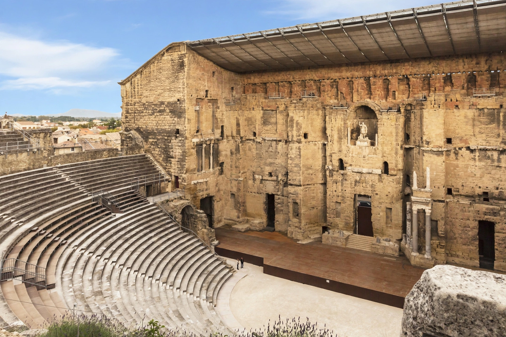

Principality of Orange
| Principality of Orange | |
|---|---|
 | |
| Capital | Orange (France) |
| Established | c. 1163 (county raised to principality) |
| Annexed by France | 1713 (Treaty of Utrecht) |
| Ruling houses | Baux; Chalon; Nassau |
The Principality of Orange (French: Principauté d'Orange) was a small feudal state in Provence in southern France, centred on the town of Orange (the Roman Arausio) in the Rhône valley. Though tiny in extent, it achieved an outsized place in European history because its princely title passed to the Dutch House of Nassau, giving the Netherlands its House of Orange-Nassau and the Dutch national colour.
History
The county of Orange emerged in the Carolingian period; around 1163 the Holy Roman Emperor Frederick Barbarossa raised it to a principality. The princes of the house of Baux ruled it for centuries, after which it passed by marriage and inheritance to the house of Chalon. In 1530 the last Chalon prince, Philibert, died childless, and the principality passed to his nephew René of Nassau, who combined the names as "Orange-Nassau".
René's cousin and heir was William of Nassau — William the Silent — who became Prince of Orange in 1544 and went on to lead the Dutch Revolt against Spain. Thereafter the title "Prince of Orange" remained attached to the Dutch stadtholders and later monarchs, even though France occupied the principality repeatedly during the wars of Louis XIV and finally annexed it by the Treaty of Utrecht in 1713, when the last Prince of Orange in the direct line, William III of England, had died without children and the territory was ceded to France in exchange for recognition of Prussian claims to the title.
Legacy
The name survives in the Dutch royal house, the title Prince (or Princess) of Orange borne by the heir to the Dutch throne, the Order of the House of Orange, and "Oranje" as the identity of Dutch national sports teams. Orange place-names worldwide — from Orange County to the Orange Free State in South Africa — trace back to this small Provençal principality or to the house that ruled it.